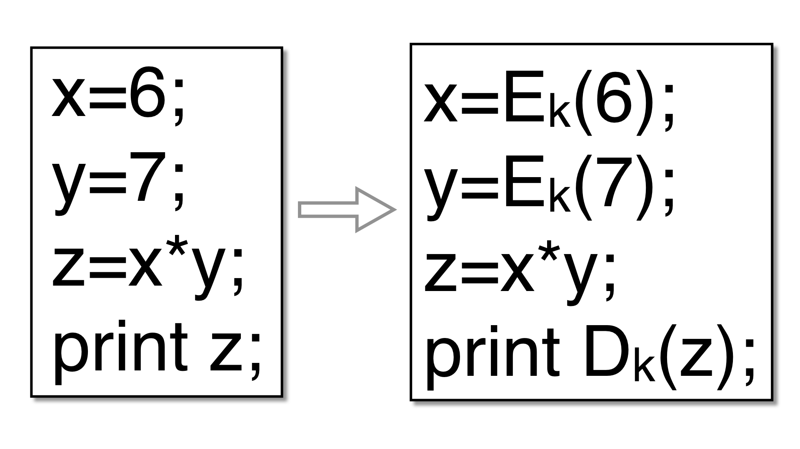

Encode integer variables so that they have a non-standard
data representation. The goal is for a variable's real value (and
the values of intermediate expressions used to compute it) to never
be revealed, until it is printed or otherwise escapes the
program. For example, an integer variable v could be
replaced with:
v' = a*v + b
where a is a random odd integer and b a
random integer. For example, given this program
int main () {
int arg1 = ...
int arg2 = ...
int a = arg1;
int b = arg2;
int x = a*b;
printf("x=%i\n",x);
}
Tigress might produce the following:
a = 1789355803 * arg1 + 1391591831;
b = 1789355803 * arg2 + 1391591831;
x = ((3537017619 * (a * b) - 3670706997 * a) - 3670706997 * b) + 3171898074;
printf("x=%i\n", -757949677 * x - 3670706997);
A typical invokation of this transformation lists a collection of local variables and formal parameters, and global variables:
--Transform=EncodeData \
--GlobalVariables='g1,g2' \
--LocalVariables='fun1:L1,L2;fun2:L3' \
--EncodeDataCodecs=poly1
These variables should all be integers, pointers to integers, arrays of integers, or combinations
of these. In the example above, g1 may be an int, L1 an int*,
L2 an array of ints, and L3 an array of pointers to ints.
If you want the return value of a function fun1 to be encoded, specify it this way:
--Transform=EncodeData \
--LocalVariables='fun1:return' \
--EncodeDataCodecs=poly1
| Option | Arguments | Description |
|---|---|---|
| --Transform | EncodeData | Replace integer variables with a different encoding. Use --GlobalVariables and --LocalVariables to specify the variables that should be transformed. In addition to the variables specifed, any other variables that are related through aliasing will be transformed. Only integer variables, arrays of integers, and pointers to integers are currently supported. Avoid structs, since our alias analysis algorithm conflates all fields. |
| --EncodeDataCodecs | automatic, poly1, polyn, addshare, xorshare, addxorshare, lineargf2, bitperm, feistel, split_bits, split_nibbles, split_bytes, bignum, bcd, rational, montgomery, xor, xorfloat, fixed, softfloat, null, add, rnc, poly_xor, xor_poly, poly_rnc, xor_rnc, * | Comma-separated list of the kinds of codecs that may be used. The bijective integer codecs poly1 and polyn (and xor) are the ones that make sense in general; the others have caveats noted below. Default=poly1.
|
| --EncodeDataComposeCodecs | Compose codecs into nested encodings, as an alternative to the built-in shortcuts (poly_xor, xor_rnc, ...). The value is a semicolon-separated list of chains, each a comma-separated list of at least two codecs; one chain is chosen at random per variable and applied outermost-to-innermost, so a,b,c encodes as a(b(c(x))). For example --EncodeDataComposeCodecs='poly1,xor;rnc,poly1' encodes each variable as either poly1(xor(x)) or rnc(poly1(x)). Every codec except the outermost (first) must be single-piece. This combines with --EncodeDataCodecs: the plain codecs and the composition chains form one pool to choose from per variable. From version 4.1.1 Default=NONE. | |
| --EncodeDataDebug | pointsToGraph, aliasConstraints, aliasProgress, aliasDebug, aliasTypes, mayAliasRelationships, traceUpdates | Debugging options. Default=NONE.
|
| --EncodeDataOptimize | Simplify expressions. Default=true. | |
| --EncodeDataTrace | Trace execution of encoded data. Default=false. | |
| --EncodeDataPolyDegree | INTSPEC | Degree of the permutation polynomial used by the polyn codec (must be >= 1; degree 1 is equivalent to poly1). A higher degree gives more diversity. The inverse polynomial used for decoding has a bounded but larger degree (roughly the word size), so decoding cost grows modestly with the degree. From version 4.1.1 Default=3. |
| --EncodeDataNumberOfPieces | INTSPEC | Number of pieces in which to break up a value. Only applies to codecs that split values, such as rnc. The count also decides whether rnc can encode a 64-bit value on a target without 128-bit integers (--Allow128BitInts=false). Its usual decode reconstructs through the product of all the moduli, which must exceed the type's range and so exceeds 64 bits; the narrow alternative (Garner's mixed-radix reconstruction) needs an unsigned type and at least 3 pieces, because a digit step costs twice the width of one modulus. With 2 pieces on a 64-bit value and no 128-bit integers available, rnc reports that it cannot encode the value. From version 4.1.0 Default=2. |
| --EncodeDataStorage | struct, split | How variabls split into multiple pieces should be stored. Default=struct.
|
The codecs differ in the algebra they preserve. A codec is homomorphic in an operation when that operation is performed directly on the encoded value, so the cleartext never appears in a register; other operations fall back to decode / operate / re-encode. This table summarizes each codec.